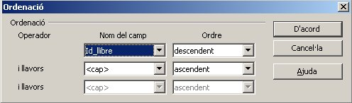

Malgrat que el paquet Open Base permet crear aplicacions força complexes mitjançant diversos llenguatges de programació, es possible fer una explotació bàsica partint només de les taules.
Per introduir dades a les taules cal que obriu la base de dades i feu doble clic damunt la taula que voleu obrir o bé clicant el botó dret seleccioneu obre. Obriu per exemple la taula Alumnes.
Per afegir elements a la taula que acabeu d'obrir, cal que us situeu a la última fila marcada amb el símbol nou.
Afegiu 5 alumnes.
Com pots comprovar a mesura que introdueixes alumnes la barra de Registres de la part inferior de la finestra et va mostrant el registre en el que et trobes i el nombre de registres que hi ha en total a la taula.
Aquesta barra s'anomena barra de navegació perquè et permet accedir a qualsevol registre (indicant el nombre corresponent), saltar d'un registre a una altre (endavant o endarrere) o passar directament al primer o a l'últim registre. Fes proves per veure com funciona.
La mateixa barra disposa també d'una icona per inserir nous registres. Fixeu-vos que si una clau primaria té activa la característica "valor automàtic", no cal dona-li cap valor. Cada cop que inserim nous registres va prenent un valor diferent de forme incremental.
Ara obriu la resta de taules i afegiu un mínim de cinc registres a cadascuna d'elles.
Abans de continuar investigant noves formes d'introducció de dades, donarem una ullada a la barra d'eines, ja que ens pot resultar de molta ajuda per l'explotació de les dades.
A continuació podeu veure una imatge que recull les principals accions de la barra. Com que entre les versions Linux i Windows hi ha certes diferencies, us posem ambdues barres.
Les opcions de copiar retallar i enganxar són eines força útils per evitar l'escriptura de dades repetides.
Copia:
Pots copiar el valor d'un camp per després enganxar-lo dintre d'un altre camp del mateix o d'un altre registre.
Primer has de seleccionar el valor i prémer el botó de la barra d'eines o com sempre Ctrl+C, o botó dret Copiar. També es pot aconseguir el mateix objectiu arrossegant el valor a copiar fins al seu destí.
Després selecciones on vols enganxar el valor copiat i enganxes fent servir la icona o be la combinació de tecles Ctrl-V.
Pots duplicar tota una fila arrossegant el quadret de selecció de registre fins al final de la taula.
Retalla:
El mateix que en el cas anterior però tingués present que en aquest cas el valor retallat desapareix de la posició original.
Enganxa:
Ja comentat anteriorment.
Cada cop que feu qualsevol modificació a les dades de la taula podreu desfer els canvis usant la icona de la barra o teclejant Ctrl-Z.
Des de les taules es poden eliminar registres si cliqueu el botó dret sobre el marge esquerre de quasevol registre i seleccioneu "Suprimeix les files" tal com mostra la imatge.
És possible seleccionar més d'un registre clicant sobre el marge esquerre amb el botó esquerre del ratolí al mateix temps que cliquem la tecla Ctrl o la tecla BloqMayus. En aquest cas l'acció anterior eliminaria tots els registres seleccionats.
Podeu també eliminar registres des del menú edita, activant la opció "Suprimeix la fila". Igual que el el cas anterior, eliminarà la fila actual o bé totes les seleccionades.
A vegades ens caldrà importar les dades des d'altres aplicacions. Aquí n'explicarem dues força comuns, la importació de dade des d'un full de càlcul i la importació de dades des d'un document de text.
En aquest cas podem realitzar la importació fent servir el porta-retalls. Caldrà obrir el full de càlcul on s'ubiquin les dades i copia totes les cel·les a importar incloses les cel·les de la capçalera amb els noms del camps.
Un cop copiades ens traslladarem a la base de dades, a la finestra principal. Cercarem la taula on volem afegir-hi les dades i clicarem a sobre amb el botó dret. Escollirem Enganxa.
Aquesta acció ens obrirà un quadre de diàleg com el de la següent figura. Escollirem afegir dades i fer servir la primera fila com a nom de les columnes (dels camps) i clicarem el botó següent...
... que ens portarà a un segon quadre de diàleg on podrem aparellar el nom de les columnes amb el nom dels camps de la taula. Si els noms coincideixen l'emparellamanent es fa de manera automàtica. Un cop emparellats cliqueu el botó Crea.
Això afegirar les dades del full de càlcul a la taula.
A vegades és possible que el format on es troba la font de les dades sigui un fitxer de text en el que cada línia representi un registre i els camps es torbin separats per un caràcter especial com ara la coma, el punt i coma o d'altres.
El mecanisme d'importació en aquest cas passa per obrir el fitxer des de qualsevol aplicació LibreOffice (inclosa l'Open Base). Això, després de passar per un quadre de diàleg obrirà un full de càlcul amb les dades del fitxer. A partir d'aquí caldrà procedir com si es tractés directament d'un full de càlcul.
Per obrir el fitxer de text podeu fer-ho des del menú Fitxer o be des de la barra d'eines o bé clicant CTRL-O. Podrem navegar i cercar el fitxer. En obrir-lo ens apareixerà el següent quadre de diàleg
EL quadre us permet seleccionar el caràcter delimitar dels camps (coma, punt i coma o d'altres). També permet escollir altres característiques que us ajudaran a delimitar les dades correctament. En polsar el botó D'acord, s'obrirà una full de càlcul amb les dades del fitxer.
A partir d'aquí seguiu les indicacions d'importació com si es tractés d'un full de càlcul.
De forma similar a la importació, podem exportar dades de les nostres taules situant-nos a la finestra principal, clicant el botó dret del ratolí i seleccionant còpia. Després sobre un full de càlcul, per exemple, podem enganxar i d'aquesta manera hi copiarem les dades.
A més d'introduir dades, sovint ens interessarà trobar un cert registre, o fins i tot ordenar-los per poder-los comparar fàcilment.
Per fer una cerca dels registres que acompleixen un cert criteri directament des de la taula de dades, fem servir l'opció Cerca de la barra d'eines on ens mostra la següent finestra:
Si polses ara sobre el botó Cerca accediràs als registres que tenen al camp Editorial el valor Alfaguara. Si actives El contingut del camp és buit aleshores al clicar Cerca es marcaran els registres on el camp Editorial està buit. Si actives El contingut del camp no és buit es marcaran els registres on el camp té un valor.
Si selecciones tots els camps buscarà el valor indicat el tots els camps i no només en el que et trobis en aquell moment.
Al quadre combinat Posició, podrà seleccionar la part del camp on vols que busqui el valor indicat. Per exemple si al quadre Text de la part superior poses 19, selecciones el camp Any Edició i a posició poses a l'inici del camp aleshores al fer la cerca es mostraran tots els registres dels llibres editats al segle XX.
Pots ordenar el contingut de la taula pel valor de qualsevol dels camps de la taula.

Aquesta finestra mostra la forma d'ordenar la taula de forma ascendent pel valor del camp Titol.
Aquesta imatge mostra la forma d'ordenar els llibres per Autor, i els llibre de mateix autor també per Títol.
Per ordenar pel valor d'un únic camp només hem de seleccionar el camp fent un clic sobre el nom del camp i polsar sobre la icona del tipus d'ordre que volguem. Ascendent o Descendent.

|
|

|
|